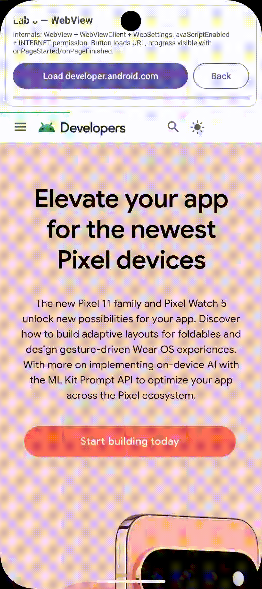

WebView, WebChromeClient & Manejo del Botón Atrás
Implementa un navegador embebido seguro: control de enlaces internos con WebViewClient, monitoreo de progreso
con WebChromeClient y navegación de historial con webView.canGoBack().
1. Captura en Emulador
Selección Completa
webview.gif

2. Código Fuente Completo — XML, Java y Kotlin
<?xml version="1.0" encoding="utf-8"?>
<LinearLayout xmlns:android="http://schemas.android.com/apk/res/android"
xmlns:app="http://schemas.android.com/apk/res-auto"
android:layout_width="match_parent"
android:layout_height="match_parent"
android:orientation="vertical">
<!-- Header con info + botones + progress -->
<com.google.android.material.card.MaterialCardView
android:layout_width="match_parent"
android:layout_height="wrap_content"
android:layout_margin="8dp"
app:cardElevation="0dp"
app:strokeColor="@color/cardStroke"
app:strokeWidth="1dp">
<LinearLayout android:orientation="vertical" android:padding="12dp">
<TextView android:text="@string/acwebv_title" style="bold 16sp"/>
<TextView android:text="@string/acwebv_info_desc" textSize="11sp"/>
<LinearLayout android:orientation="horizontal">
<Button android:id="@+id/btnLoad" text="@string/acwebv_btn_load" layout_weight="1"/>
<Button android:id="@+id/btnBack" text="@string/acwebv_btn_back" style="OutlinedButton"/>
</LinearLayout>
<ProgressBar android:id="@+id/wvProgress" style="?android:attr/progressBarStyleHorizontal"
android:layout_width="match_parent" android:layout_height="4dp" android:visibility="gone"/>
</LinearLayout>
</MaterialCardView>
<!-- WebView ocupa todo el resto -->
<WebView android:id="@+id/webView"
android:layout_width="match_parent"
android:layout_height="0dp"
android:layout_weight="1" />
</LinearLayout>3. ¿Cómo tener propiedades entre JS y Kotlin? ¿El navegador reconoce métodos Kotlin?
No — el motor JS del WebView (Chromium) no entiende Kotlin. Kotlin compila a bytecode JVM como Java. El puente se hace exponiendo métodos Java/Kotlin a JS con @JavascriptInterface y llamando a JS desde Kotlin con evaluateJavascript. Es bidireccional pero explícito.
Kotlin → JS (inyectar JS)
// Kotlin llama a función JS definida en la página
webView.evaluateJavascript("javascript:document.body.style.backgroundColor='lightyellow';") { result ->
Log.d("JS", "retorno: $result")
}
// Con valor de retorno (JS debe hacer return)
webView.evaluateJavascript("javascript:Android.getUserEmail()") { email ->
Toast.makeText(this, email, Toast.LENGTH_SHORT).show()
}
// Alternativa vieja (sin callback)
webView.loadUrl("javascript:alert('Hola desde Kotlin')")Usa evaluateJavascript (async con callback) en vez de loadUrl("javascript:...") (sync, sin retorno).
JS → Kotlin/Java (exponer método)
// 1. Clase Kotlin expuesta
class JsBridge(private val context: Context) {
@JavascriptInterface
fun showToast(msg: String) {
Toast.makeText(context, msg, Toast.LENGTH_SHORT).show()
}
@JavascriptInterface
fun getUserEmail(): String = Prefs.getUser(context)
@JavascriptInterface
fun log(msg: String) { Log.d("JS", msg) }
}
// 2. Registrar en WebView (¡después de setJavaScriptEnabled!)
webView.addJavascriptInterface(JsBridge(this), "Android")
// 3. En la página web / HTML cargado:
<script>
Android.showToast("Hola desde JS");
const email = Android.getUserEmail(); // → "ana@ejemplo.com"
Android.log("JS cargado");
</script>Sin @JavascriptInterface el método no es visible para JS (seguridad desde API 17).
¿Navegador reconoce Kotlin?
No directamente. Kotlin → bytecode. JS ve solo el objeto Android con métodos anotados. Puedes escribir el bridge en Kotlin o Java, es idéntico para JS.
¿JS reconoce Kotlin?
No al revés. JS no llama a Kotlin sin bridge. Necesita addJavascriptInterface. Tipos soportados: primitivos, String, no objetos complejos (usa JSON string).
Seguridad
Activa javaScriptEnabled solo si necesitas bridge. No expongas métodos sensibles. Valida origen con shouldOverrideUrlLoading y usa https.
| Dirección | Método | Ejemplo |
|---|---|---|
| Kotlin → JS | evaluateJavascript(js, callback) | webView.evaluateJavascript("document.title", { title -> Log.d(title) }) |
| JS → Kotlin | @JavascriptInterface fun … | Android.showToast("hi") en JS → ejecuta Kotlin |
| Propiedad compartida | getUserEmail() / showToast() | JS lee email de Prefs, Kotlin lee título de página |
Lab actual: tiene javaScriptEnabled=true pero sin bridge (solo carga developer.android.com). Para probar el puente, crea un assets/demo.html con <button onclick="Android.showToast('Hola')"> y cárgalo con webView.loadUrl("file:///android_asset/demo.html").
4. Cómo crear un puente mejor donde uno lee y el otro también (bidireccional con estado)
El ejemplo anterior es unidireccional (Kotlin→JS o JS→Kotlin). Para que ambos lean y escriban la misma propiedad usa un estado compartido (Prefs / LiveData) + 2 métodos get / set + notificación al otro lado con evaluateJavascript. Así evitas que cada lado tenga copia desactualizada.
Kotlin — bridge con estado (Prefs como fuente única)
class AppBridge(private val context: Context, private val webView: WebView) {
@JavascriptInterface
fun getEmail(): String = Prefs.getUser(context)
@JavascriptInterface
fun setEmail(email: String) {
Prefs.saveUser(context, email)
// Notifica a JS que el dato cambió → JS lee el nuevo valor
webView.post {
webView.evaluateJavascript("javascript:onEmailChanged('$email')", null)
}
Log.d("Bridge", "JS → Kotlin setEmail($email)")
}
// Kotlin también puede escribir y avisar a JS
fun updateEmailFromKotlin(newEmail: String) {
Prefs.saveUser(context, newEmail)
webView.evaluateJavascript("javascript:document.getElementById('email').value='$newEmail';") {}
webView.evaluateJavascript("javascript:onEmailChanged('$newEmail')", null)
}
}
// Registro
webView.addJavascriptInterface(AppBridge(this, webView), "Android")JS — lee y escribe la misma propiedad
// assets/demo.html
<input id="email" placeholder="email" />
<button onclick="save()">Guardar</button>
<p id="status"></p>
<script>
// 1. Al cargar, JS LEE de Kotlin
window.onload = () => {
const email = Android.getEmail(); // → lee Prefs vía Kotlin
document.getElementById('email').value = email;
};
// 2. JS ESCRIBE hacia Kotlin
function save() {
const v = document.getElementById('email').value;
Android.setEmail(v); // → Kotlin guarda en Prefs y notifica
}
// 3. Kotlin puede LLAMAR a esta función para avisar que cambió
function onEmailChanged(newEmail) {
document.getElementById('email').value = newEmail;
document.getElementById('status').innerText = "Actualizado: " + newEmail;
}
</script>Flujo 1: JS lee
Android.getEmail() → Kotlin lee Prefs → retorna String a JS. Sin `evaluateJavascript`.
Flujo 2: JS escribe
Android.setEmail(v) → Kotlin guarda + hace `evaluateJavascript("onEmailChanged('v')")` → JS actualiza UI. Ambos quedan sincronizados.
Flujo 3: Kotlin escribe
updateEmailFromKotlin("a@b.com") → `Prefs` + `evaluateJavascript("email.value='a@b.com'")` → input en JS se actualiza sin que JS haya pedido.
Por qué es mejor
- Fuente única: `Prefs` (o `DataStore` / `ViewModel` + `LiveData`) — no hay 2 copias divergentes.
- Ambos leen y escriben: `getEmail` / `setEmail` expuestos + `evaluateJavascript` para push.
- Seguro: valida `email` en Kotlin con `ValidationUtils.isEmail` antes de `Prefs.saveUser`.
- Extensible: mismo patrón para cualquier propiedad: `getUserName`/`setUserName`, `getTheme`/`setTheme` con `onThemeChanged`.
// Java equivalente del bridge mejorado
public class AppBridge {
private final Context ctx; private final WebView wv;
public AppBridge(Context c, WebView v){ ctx=c; wv=v; }
@JavascriptInterface public String getEmail(){ return Prefs.getUser(ctx); }
@JavascriptInterface public void setEmail(String e){
if(!ValidationUtils.isEmail(e)) return;
Prefs.saveUser(ctx, e);
wv.post(() -> wv.evaluateJavascript("javascript:onEmailChanged('"+e+"')", null));
}
}